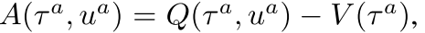
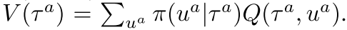
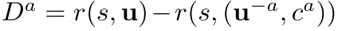

1.4 混合-COMA
paper: Counterfactual Multi-Agent Policy Gradients
核心:
- centralised Critic: 使用联合动作和全局状态, 估计Q函数, 只在训练时用;
- decentralised actors 优化策略;
- counterfactual baseline解决多智能体信用分配问题, (让其他智能体执行默认动作构造一个奖励, 和全局奖励进行对比, 可以评估一个智能体动作的价值. 有一个困难是如何选择默认动作). CMOA使用上述思想, 然后使用集中式critic计算advantage function与counterfactual baseline进行对比. 其中反事实baseline通过固定其他智能体动作, 把单个智能体的动作边缘化. 因此COMA不用额外模拟, 而是基于集中式critic为每个智能体单独计算一个baseline.
- critic representation. 通过一次forward pass为给定智能体计算所有与其他智能体不同的动作的Q值, 高效计算counterfactual baseline.
1. Methods
1.1 Independent Actor-Critic(IAC)
- 与IQL算法思想一样, 不过用AC代替Q-learning.
- 智能体共享参数. 输入各自观察和编号, critic使用各自局部观察, 输出各自局部Q值, 不用全局信息.
- 考虑两个变体:
- 每个智能体critic估计,然后使用基于TD-error的梯度训练.
- 每个智能体critic估计, 后面使用优势函数计算梯度:  ,其中 
- 无法解决信用分配问题.
1.2 Counterfactual Multi-Agent Policy Gradients
使用COMA算法解决集中式训练问题. 核心思想:1) centralisation of the critic, 2) use of a counterfactual baseline, and 3) use of a critic representation that allows efficient evaluation of the baseline.
训练时critic使用全局状态和联合动作. Actor只基于自身观察训练. 智能体共享参数.
每个智能体Actor基于TD-error训练的梯度如下,
(3)

上述公式无法解决信用分配问题, 因为TD-error使用的是全局奖励. 当其他智能体都在进行探索时, 单个智能体训练的梯度包含很多噪声.
本文使用 counterfactual baseline解决该问题.
- 启发工作: difference rewards. 为每个智能体构造一个奖励函数  , 把全局奖励和把智能体a的动作使用一个default action 代替时的奖励作比较. 智能体a improve 的动作也可以improve 真实奖励, 因为 不依赖于智能体a的动作.
- difference rewards可以解决信用分配, 但是每个智能体都需要单独进行模拟估计. 另外如何选择也不清楚.
- COMA使用全局状态s和联合动作u学习集中式critic, . 对于每个智能体来说, 都可以计算advantage function, 用来当前动作的Q值和边缘化的counterfactual baseline进行比较.
(4)

上述优势函数不通过模拟执行, 而是使用centralised critic为每个智能体单独计算只有自己动作改变时的counterfactual baseline.
当网络很复杂时, 上述优势函数计算代价也很高, 输出节点也要. COMA使用critic representation解决该问题.
- 如图1c所示, 其他智能体的动作也加入网络的输入, 然后输出每个智能体动作的Q值.
- 然后, 通过一次前向传播就可以为每个智能体计算counterfactual advantage.
- 另外, 输出只有.
Figure 1: In (a), information flow between the decentralised actors, the environment and the centralised critic in COMA; red arrows and components are only required during centralised learning. In (b) and (c), architectures of the actor and critic.
2. 实验
实验设置:
- 视野受限;
- 所有智能体有相同全局奖励, 基于伤害和输赢设置奖励函数;
- actor用GRU, critic用MLP;
算法伪代码